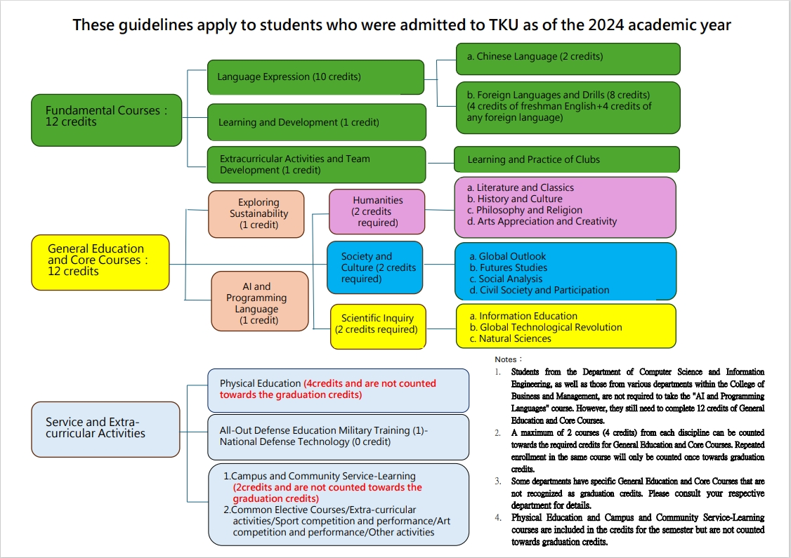

Introduction
The General Education Interdisciplinary Micro Program is centered around thematic issues, constructing an interdisciplinary learning environment. It integrates courses from various fields of general education and academic departments, combining social responsibility, practical work, and self-directed learning.
The program is divided into three main areas: 'Basic Interdisciplinary', 'Thematic Issues', and 'Practical Orientation'.
It aims to inspire students' interdisciplinary thinking, deeply connect knowledge, emphasize practical application, and cultivate STEAM talents, laying the foundation for holistic education.
Required Course List
